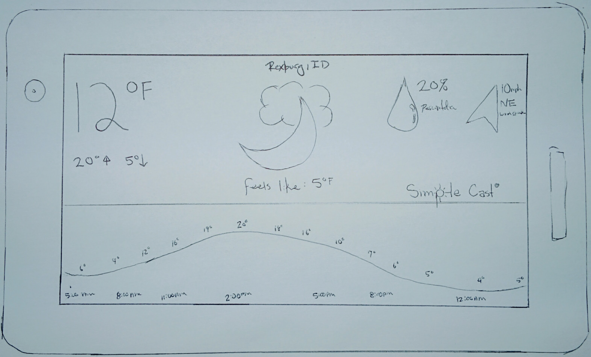
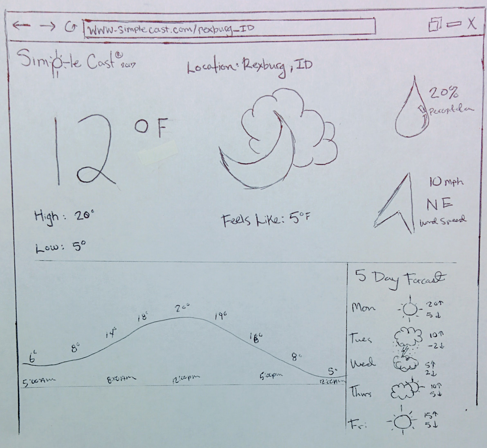

The purpose of this site and application is to display the weather as (and the faux app name implies) as clearly and simply as possible. This includes the obviously important current temprature, the high and low for that day, the chance of precipitation, and the wind speed and direction. When more screen real estate is available, the temprature timeline for the day is displayed, and the desktop version of the site includes the 5 day forcast.
The target audience for this site includes those who like quick, "glancable" information - no fancy gimics or animations - just simple and easy to read information. This group may include those with employment and a busy schedule, those who travel lots but don't have much leisure time, or those who simply just enjoy a minimalistic interface and simplicity.
Name: Benjamin Lancaster
Age: 36
Occupation: Business Consultant
Description
Ben is a busy man - he works freelance and that means he never knows when or where he will be next. He has clients in many different states across the U.S. and even an international client. Ben is no stranger to frequent travel. One personality trait that he has developed throughout his career is speed and simplicity. If it takes too long or is too complicated, it's not worth doing. Ben feels his simple and fast lifestyle is what keeps him feeling young and brings a feeling of success to all his endevors.
Ben is a busy man - he works freelance and that means he never knows when or where he will be next. He has clients in many different states across the U.S. and even an international client. Ben is no stranger to frequent travel. One personality trait that he has developed throughout his career is speed and simplicity. If it takes too long or is too complicated, it's not worth doing. Ben feels his simple and fast lifestyle is what keeps him feeling young and brings a feeling of success to all his endevors.
Mobiel Display: Portrait

Mobiel Display: Landscape
Desktop Browser

Reviewer: Parker Goldsberry
Positive
The page is consistant between all sizes. The information seems easy to understand and the important bits are easy to find quickly. I like the large size of the tempreture, and also the inclusion of the 'feels like' temprature.
Critical:
Some of the information changes locaion on different sizes - it would be nice it it were consistantly in the same page across all devices. Also, I feel like more information could be included on the desktop site. It is a big screen, but there is still not very much information (compared to the mobiel version). Maybe include a precipitation timeline? Or some information about the location? Also, adding a navigation panel at the top for the smaller, mobile views.
Changes I will make:
I will rearrange the information to be more consistant (in the same place) on each display size. I will also try to include more of the information (that is given in the JSON object) on the desktop site.